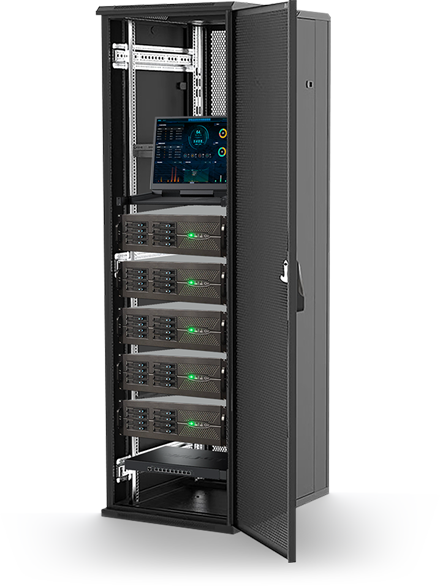
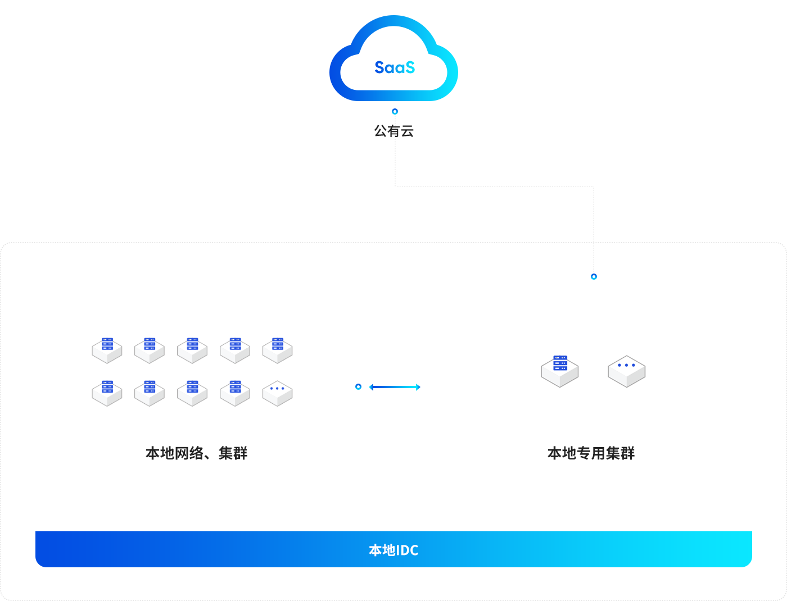

服务器集群
系统基于高可用集群服务器方案，采用微服务架构，超强容灾能力、稳定可靠、平滑扩展， 支持海量数据存储。为安巡数字中台和上层应用系统提供可靠算力支持。
功能特点：
- 快速部署
- 更低时延
- 弹性扩容
- 安全可控
- 统一管理
- 托管运维

技术参数
- 服务器数量 1 2 3 5
- 集群模式 否 否 是 是
- 宕机1台 1 2 3 5
- 故障监控 否 否 是 是
- 算力资源 1 2 3 5
- 存储空间 否 否 是 是
- 服务高可用 1 2 3 5
- 数据高可靠 否 否 是 是
- 容灾能力 1 2 3 5
- 弹性扩容 否 否 是 是
两种部署模式
本地私有集群：通过本地私有集群，将安巡云完整部署在客户机房现场。在客户的企业专网中使用，相关数据和服务仅在本地存储和运行，可与外部互联网完全隔离。
本地专用集群：通过本地专属服务器集群，将公有云延伸至客户机房，融合公有云和本地 IDC的双重优势，提供数据就近处理、敏感信息驻留等功能，用户可以享用开箱即免运维的 SaaS服务， 同时享受本地化的时延与数据安全。
